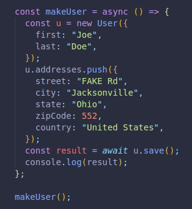
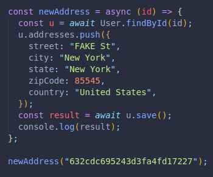
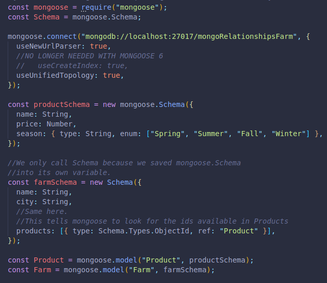
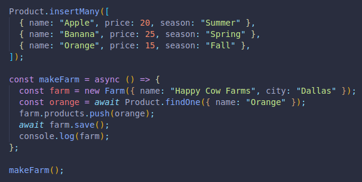
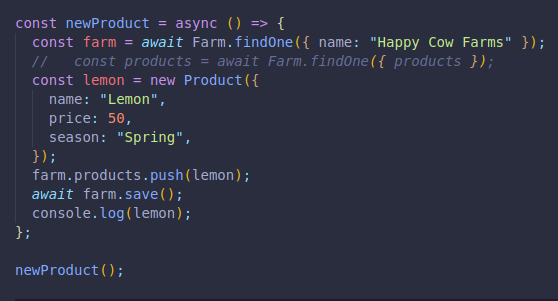
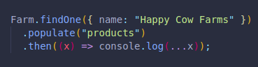
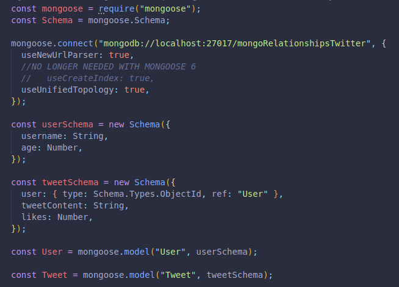
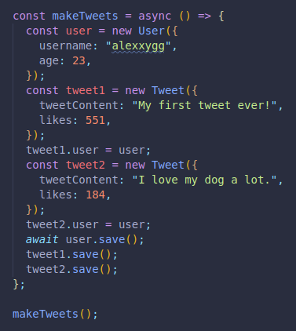
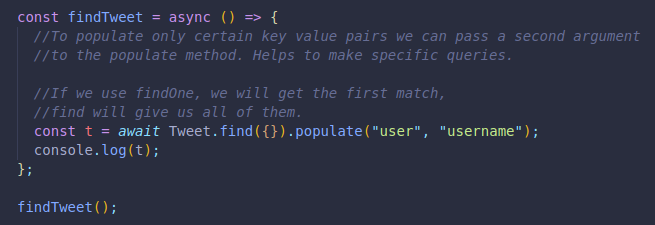

Relationships between data are the different entities we store in a database that are connected in one way or another.
A website for social media may have a user's friends in one entity, its profile pictures and posts in another, and comments and likes in yet another one.
Although they are separate entities, they are all in the same database, interconnected in ways to always have the data available.
In SQL, the data is stored in isolated tables, where strict schemas are needed. Each table can be connected and accesses by another one by inking them.
A single or multiple aspect of each table can be referenced in order to avoid duplication.
There are many ways to do this:
Since MongoDB does not follow the same pattern/infrastructure as SQL database, we do this linking/referencing in alternate ways.
There are many structuring options for our data.
Depending on how much data we're working with, it may be wise to choose different approaches for information storing.
A user with a few addresses, like in Amazon, Uber Eats. It's very unlikely to have thousands of addresses. There's no need to separate them to their own collection or model.
We should consider if we need to access an address without the user, if we would ever need to access all of them at the same time, etc.
Here is an example:
We create a schema, with one of the keys having an array of keys and values as its value.
BY default, this embedded array will generate its own _id, which we can prevent as seen in the code.
Here we use our schema to create a new user.
And here we make a function to add a new address to the array designated for addresses.
This is our approach for a medium amount of data.
We will use an object id in the parent object as a reference to the other objects in order to reference them. It can be another key instead too.
We again create a schema, this time for a farm, and then another for our products.
We link them together by using ref: which references our schema variable products in our farm schema, and finally save them into their own variables, even though we referenced one of them first.
We can now add products to our products database, and create a new farm.
We take one of our newly created products and push it to our farm's products array for objects.
And here we make a function and execute it to create a new product and also push it to our farm:
Our ne farm will have a key called products, and the value will be an array of objects with any products we assigned it.
Unfortunately, they won't show us the name, price or season. Instead we will see the object id of each product only.
To overcome this and have a visual representation instead, we can use the populate method.
(What we pass in is whichever variable name we called the reference for the array of objects.)
Sometimes we many need many more references in our database.
A user many have created thousands of tweets in their lifetime.
We can reference the user to each tweet, instead of having all tweets in an array of objects inside the user's object.
Here is an example, first we create the schemas:
Then we create a user and a pair of tweets. We save the user first, then the tweets in the user object directly.
And we access every tweet along with the visual of the username for the creator of each tweet.
So we know we can embed an array of objects as a key to a value, store a reference to another array of objects on a parent, and store a reference to a parent in a child object.
We can even combine these options, like storing reference on both child and parent objects for each other to go both ways. It could help prevent the need to populate.
There are additional considerations once we apply database relationships int our apps.
It may make sense to store the data on both referenced sides, which is a bad idea in SQL databases.